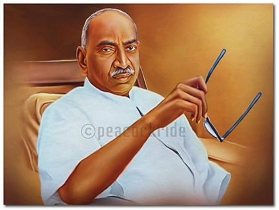

A school dropout who made school education accessible to millions of poor children
K. Kamaraj, Indian politicion.

At the age of 10, he dropped out of school and started working to support his family. Decades later, he became theChief Minister of Tamil Nadu and served three consecutive terms.
He served 9 years in prison for his participation is variousIndian Independence Movements.
He joined the Congress as a grassroot worker and would later go on to become the President of the Indian National Congress.
When he became the Chief Minister of Tamil Nadu, he inducted his two contestants as members of his cabinet.
He reopened 6000 schools closed by the previous Government and added 12000 more schools across Tamil Nadu, bringing the total number of schools to 27000.
He introduced the Free Midday Meal Scheme to provide at least one meal per day to school children. This benefitted 14 lakhs of poor school children. This scheme was later expanded across India and continues till this day.
He was hailed as Kalvi Thanthai (Father of Education) and as Kalvikkan thirantha Kamarajar (The man who opened our eyes to education).
He was fondly referred to asPerunthalaivar (Great Leader) for his visionary, selfless, pragmatic and successful leadership of the state during his 9 yearsof rule.
He was awarded India's highest civilian honour, the Bharat Ratna, posthumously.
A Tamil film titled‘Kamaraj’ was made in commemoration of his life and achievements.